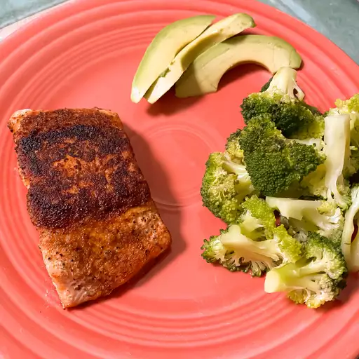

Blackend Salmon Fillets

Blacked Salmon Fillets
Ingredients
- 2 Tablespoons ground paprika
- 1 Tablespoon ground cayenne pepper
- 1 Tablespoon onion powder
- 2 Teaspoons salt
- 1/2 Teaspoons ground white pepper
- 1/2 Teaspoons ground black pepper
- 1/4 Teaspoon dried thyme
- 1/4 Teaspoon dried basil
- 1/4 Teaspoon dried oregano
- 4 Salmon fillets, skin and bones removed
- 1/2 cup unsalted butter, melted
Steps
- Mix paprika, cayenne pepper, onion powder, salt, white and black pepper,
thyme, basil, and oregano together in a small bowl.
- Brush salmon fillets on both sides with 1/4 cup butter,
and sprinkle evenly with the spice mixture.
- Heat 2 tablespoons melted butter in a large, heavy skillet over high heat. Add salmon and cook until blackened,
2 to 5 minutes. Lift fillets, add remaining melted butter to the skillet, and flip fillets into the butter. Cook until-
the other side is blackened and fish flakes easily with a fork, 3 to 5 minutes.